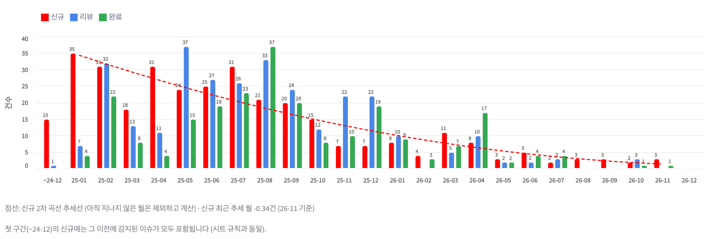
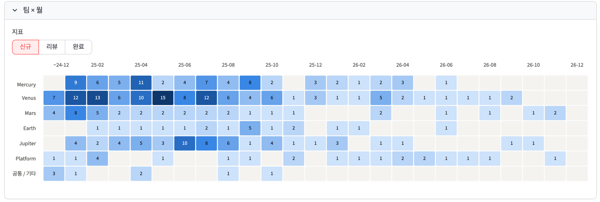
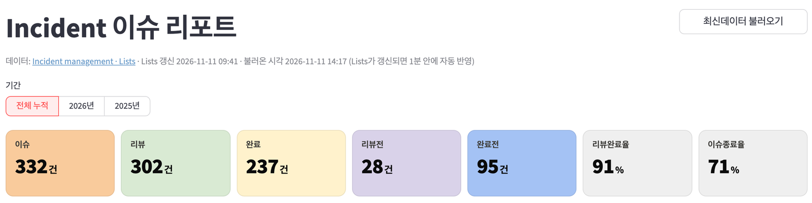
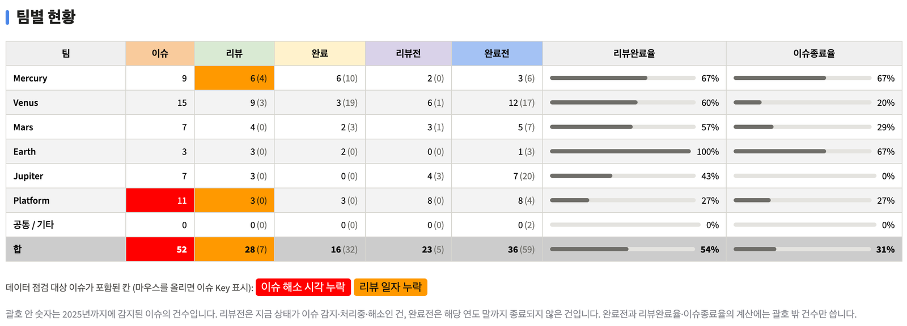
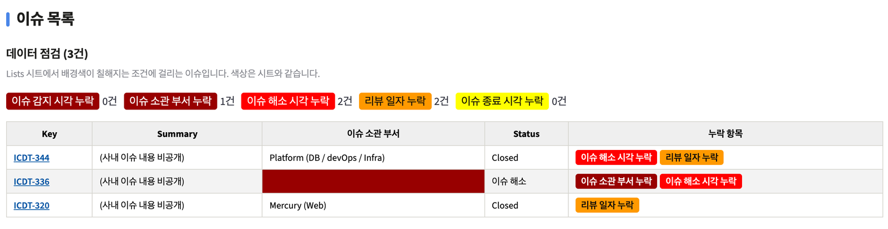

핀다 (FINDA) · AUTOMATION 02
Incident Dashboard
Incident 이슈 현황은 JIRA 데이터를 스프레드시트에 옮긴 뒤, 수식으로 만든 표와 차트로 확인하고 있었습니다. 시트를 열어야만 볼 수 있었고, 누락된 값은 배경색으로만 드러났으며, 연도를 넘긴 이슈는 집계 값이 맞지 않았습니다. 같은 집계 규칙을 코드로 옮기고, 누락 데이터 점검과 자동 갱신까지 갖춘 웹 대시보드로 만들었습니다. 이 대시보드로 인시던트 관리와 재발방지 프로그램을 운영한 결과, 월 평균 33건이던 Incident가 월 평균 2.5건으로 줄었습니다.
- PYTHON
- STREAMLIT
- PANDAS
- JIRA REST API
- GOOGLE SHEETS (GSPREAD)
- APSCHEDULER
- SLACK BOLT
- RESULT
월 33건이던 Incident가,
월 2.5건으로.
대시보드로 팀별·월별 현황과 리뷰·종료 누락을 매일 확인하며 인시던트 관리와 재발방지 프로그램을 운영했습니다. 그 결과 월 평균 신규 Incident가 33건에서 2.5건으로, 약 92% 줄었습니다.
MONTHLY INCIDENTS · 92% ↓
33건 → 2.5건월 평균 신규 Incident · 2025년 1~2월 대비 2026년 9~10월
RECURRENCE REVIEW
302 / 332건누적 Incident 중 리뷰(재발방지 논의)를 마친 건수


- FLOW
JIRA에서 화면까지,
한 번에 하나씩.
JIRA 필터로 Incident 이슈를 수집해 스프레드시트 Lists 시트에 기록하고, 대시보드는 Lists 시트를 읽어 집계합니다. 기존에 쓰던 시트를 그대로 데이터 원본으로 두었기 때문에, 시트를 보던 사람과 대시보드를 보는 사람이 같은 데이터를 봅니다.
jira/incident_lists.py · 실행 잠금으로 한 번에 하나만
Streamlit 대시보드 · main.py가 하위 프로세스로 실행하고 감시
- RULES
수식을 코드로,
규칙은 그대로.
대시보드의 숫자가 시트와 다르면 어느 쪽도 믿기 어렵습니다. 그래서 새 기준을 만들지 않고, 시트에 이미 있던 수식을 하나씩 읽어 같은 규칙으로 옮겼습니다.
'이슈 소관 부서'에 팀명이 포함되면 해당 팀으로 셉니다 (COUNTIFS "*팀명*"와 동일). 소관 부서가 비어 있는 이슈는 팀별·월별 집계에서 제외합니다.
이슈 감지 시각이 해당 월에 속하는 건수입니다.
리뷰 일자가 해당 월에 속하는 건수입니다.
이슈 종료 시각이 해당 월에 속하는 건수입니다.
상태가 이슈 감지·이슈 처리중·이슈 해소이면서 집계 기간에 감지된 건수입니다.
이슈 건수에서 완료 건수를 뺀 값입니다.
시트 첫 열과 같이, 첫 구간 이전에 감지된 이슈를 첫 구간의 신규에 합산합니다.
SCREEN
01 · KPI
요약 지표
- 기간(전체 누적 / 연도별)을 고르면 이슈·리뷰·완료·리뷰전·완료전 건수와 리뷰완료율·이슈종료율을 보여 줍니다.
- 기간의 기본값은 현재 연도입니다.
02 · TREND
월별 차트와 추세선
- 월별 신규·리뷰·완료를 함께 그리고, 신규 건수에는 2차 곡선 추세선을 점선으로 겹칩니다.
- 아직 지나지 않은 월과 누적 구간은 추세 계산에서 빼서, 빈 달 때문에 추세가 꺾이지 않도록 했습니다.
03 · TEAM
팀별 현황과 히트맵
- 팀별 이슈·리뷰·완료·리뷰전·완료전 표와 팀 × 월 히트맵으로, 어느 팀의 어느 달에 이슈가 몰렸는지 확인합니다.

- YEAR
해를 넘긴 이슈가,
숫자를 깨뜨리지 않도록.
시트 수식을 그대로 옮기자 연도별 보기에서 값이 맞지 않는 문제가 드러났습니다. 시트에서는 보이지 않던 문제를, 연도별 보기를 만들면서 해결했습니다.
완료전이 음수가 됨
작년에 감지된 이슈를 올해 종료하면 올해 완료에는 들어가지만 올해 이슈에는 들어가지 않습니다. 그래서 '이슈 − 완료'가 음수가 되었습니다. 완료전과 각종 비율은 해당 연도에 감지된 이슈만으로 계산하도록 바꿨습니다.
이전 연도 이슈를 올해 처리해도 음수나 100% 초과 값이 나오지 않습니다.
이전 연도 처리분이 사라짐
그렇다고 작년 이슈의 리뷰·완료를 빼 버리면, 올해 실제로 처리한 일이 보이지 않습니다. 리뷰·완료·리뷰전·완료전을 해당 연도 감지 건수(이전 연도까지 감지된 건수) 형식으로 나눠 보여 줍니다.
올해 처리량과 이월된 이슈를 한 칸에서 함께 확인합니다.
이월된 미완료 이슈
완료전(이전)은 이전 연도에 감지되어 해당 연도 말까지 종료되지 않은 건, 리뷰전(이전)은 지금 상태가 리뷰 전인 건으로 정의했습니다.
해를 넘긴 미해결 이슈가 연도별 보기에서도 드러납니다.

- CHECK
집계보다 먼저,
빠진 값을 찾습니다.
JIRA에 시각이나 부서가 입력되지 않으면 집계에서 조용히 빠집니다. 시트에서는 조건부 서식의 배경색으로만 알 수 있었던 규칙을 코드로 옮겨, 이슈 목록 상단과 팀별 현황 표에 함께 표시합니다.
-
팀별 현황 · 이슈 칸
이슈 감지 시각 누락
감지 시각이 없으면 어느 월의 신규에도 들어가지 않습니다.
-
이슈 목록
이슈 소관 부서 누락
팀을 알 수 없어 팀별·월별 집계에서 제외됩니다. 목록에만 표시합니다.
-
팀별 현황 · 이슈 칸
이슈 해소 시각 누락
감지·처리중이 아닌 상태인데 해소 시각이 비어 있는 이슈입니다.
-
팀별 현황 · 리뷰 칸
리뷰 일자 누락
리뷰 완료·재발방지 처리중·Closed 상태인데 리뷰 일자가 비어 있는 이슈입니다.
-
팀별 현황 · 완료 칸
이슈 종료 시각 누락
Closed 상태인데 종료 시각이 비어 있는 이슈입니다.

RULE TABLE · HIGHLIGHT_RULES
규칙마다 라벨, 배경색, 표시할 열, 판정 함수를 한 곳에 둡니다. 목록 순서가 우선순위이며, 한 칸에 여러 규칙이 걸리면 앞의 규칙 색을 씁니다.
SHEET PARITY
시트 규칙 일부는 특정 행 번호를 범위에서 빼 두었지만, Lists 시트는 실행할 때마다 행 위치가 바뀌므로 대시보드에서는 모든 행에 적용합니다.
- REFRESH
세 군데서 눌러도,
한 번만 실행됩니다.
갱신은 정시 배치, Slack 모달, 대시보드 버튼 세 곳에서 시작할 수 있습니다. 같은 시트를 동시에 덮어쓰지 않도록 실행을 하나로 묶고, 갱신 결과가 열려 있는 화면에 바로 반영되도록 만들었습니다.
01 · LOCK
실행 잠금
- 갱신 스크립트는 파일 잠금(fcntl)을 잡은 상태에서만 실행합니다.
- 대시보드 버튼은 이미 다른 곳에서 실행 중이면 새로 실행하지 않고, 끝날 때까지 기다린 뒤 화면을 다시 그립니다.
02 · MARKER
갱신 마커와 캐시
- 갱신이 끝나면 완료 시각을 마커 파일에 기록합니다. 대시보드는 마커 값을 캐시 키로 써서, 마커가 바뀔 때만 시트를 다시 읽습니다.
- 열려 있는 화면은 1분마다 마커만 확인하고, 바뀌었으면 화면 전체를 다시 그립니다.
- 마커 기록이 실패할 때를 대비해 1시간이 지나면 마커와 관계없이 다시 읽습니다.
03 · SUPERVISE
상시 실행
- Slack 봇(main.py)을 실행하면 대시보드도 하위 프로세스로 함께 뜹니다. 사내망에서 접속할 수 있습니다.
- 대시보드가 비정상 종료되면 10초 뒤 다시 실행하고, 봇이 끝나면 함께 종료합니다. 포트가 이미 사용 중이면 띄우지 않습니다.